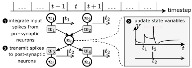
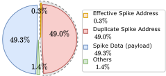
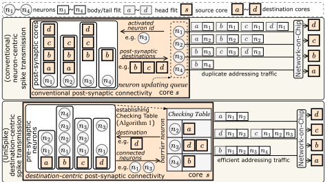
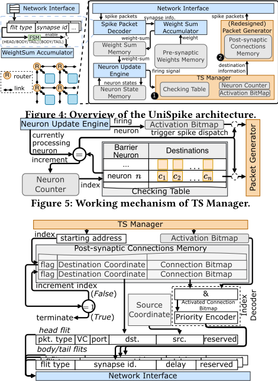
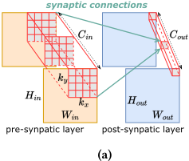
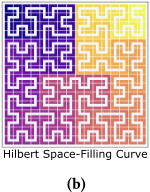
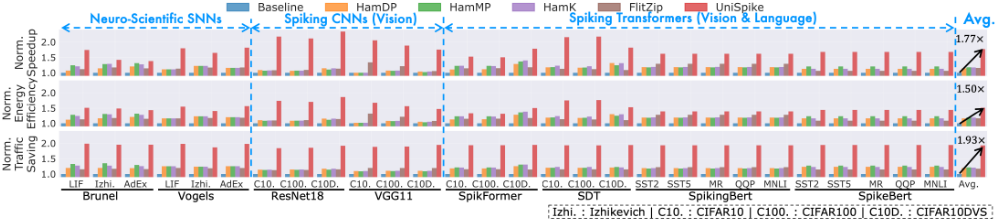
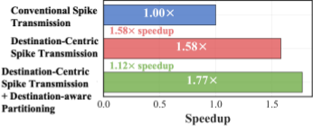

UniSpike：通过消除地址冗余在神经形态系统上加速 Spiking Neural Networks
多核神经形态系统通过基于分组的 NoC 传输 spike，但 spike 包 payload 极小，目的地址被大量重复传输，代表性负载中重复地址流量最高占总流量的 49%，而已有 multicast 与包压缩技术均不处理这类地址冗余。论文提出软硬件协同设计 UniSpike：以目的地址为中心调度 spike 发送，引入 barrier neuron 与编译期 Checking Table，将发往同一目的核的多个 spike 合并为 address-merged packet。硬件上仅增加 TS Manager 与基于 Connection Bitmap 和 Activation Bitmap 按位与的 Packet Generator，不改变 flit 格式与计算数据通路；软件上用 HSFC 初始划分加 Stochastic Segment Swap 的目的感知 SNN 划分提升同核内目的重叠度。在 512 核 2D mesh 周期精确仿真器上，覆盖 3 种神经元模型的神经科学 SNN 与 6 个视觉/NLP 深度学习 SNN，UniSpike 平均取得 1.93× 流量节省、1.77× 加速与 1.50× 能效提升，面积开销约 10.6%，并经与 Brian2 的 spike trains 对比验证为无损方案。
多核神经形态系统以基于分组的 NoC 传输 spike，spike 包 payload 极小导致目的地址字段占比过高；不同神经元产生的多个 spike 包常发往同一目的核，重复携带相同地址，形成 multicast（针对 payload 冗余）与包压缩（针对数据冗余）均未处理的第三类冗余——地址冗余。代表性负载中重复地址传输最高占总流量的 49%，而有效地址流量可低至总地址流量的 0.6%，通信开销已成为时延与能耗的主要瓶颈（论文引用已有研究报告通信时延占比可达 89.9%）。
软硬件协同设计，包含三个组件：(1) destination-centric spike 传输调度：放弃 neuron-centric 的点火即发包方式，引入 barrier neuron 作为同步点，配合编译期 Algorithm 1 生成的 Checking Table（barrier neuron 到目的核的映射），在到达 barrier 时收集发往同一目的核的全部激活前突触神经元标识，打包为一个 address-merged spike packet，使一个目的地址只为多个 spike 传输一次；(2) 轻量硬件支持：在基线核上增加 TS Manager（Activation Bitmap、Neuron Counter、按 Checking Table 排序的 Post-synaptic Connections Memory）与重新设计的 Packet Generator（将目的坐标及其连接的本地神经元存为 Connection Bitmap，与 Activation Bitmap 按位 AND 后由 Index Decoder 在共享目的地址下输出 payload flit），不改变 head/body flit 格式，基线 Spike Packet Decoder 无需额外解包逻辑，计算数据通路保持不变；(3) destination-aware SNN 划分：逐层用 Hilbert Space-Filling Curve（HSFC）做初始划分以保持空间局部性，再用受模拟退火启发的 Stochastic Segment Swap（SSS，超参数 seg_ratio 控制交换段大小）在簇间交换神经元段，减少每簇内不同 post-synaptic 目的核数量，提升地址合并机会。
相对 Baseline 平均 1.93× NoC 流量节省（传输相同 spike）
平均 1.77× 加速比；消融实验显示仅 destination-centric 调度即达 1.58× 加速，叠加 destination-aware SNN 划分后达 1.77×
平均 1.50× 能效提升
重复地址传输最高占总流量的 49%；有效地址流量可低至总地址流量的 0.6%
面积开销约 10.6%（NeuroSim，32nm CMOS 工艺节点），每核增加 1.125KB Checking Table SRAM
优于 multicast 方法 HamDP、HamMP、HamK 与包压缩方法 FlitZip（所有方法在同一仿真框架与相同配置下对比）
与 Brian2 的 spike trains 对比验证，UniSpike 无损且不损失精度
论文将神经形态 NoC 流量中的冗余细分为三类：payload 冗余（已有 multicast 处理）、数据冗余（已有压缩处理）与地址冗余（此前被忽视），并量化了地址冗余的规模；针对地址冗余提出目的视角的 spike 调度、运行时地址合并硬件与目的感知划分的软硬件协同方案。与已有工作的关键区别在于：合并不依赖包内数据可压缩性（因此优于 FlitZip），也不依赖神经元来源相同的 multicast 条件，而是按共同目的核合并任意来源的 spike，且不改变 flit 格式与计算数据通路。
相关度级别：low
命中能力域：无明显对应
理由：论文属于神经形态计算加速器的体系结构研究，核心是 SNN spike 通信的 NoC 流量优化，与本团队七域能力栈无直接交集：全文基于周期精确仿真器评估，无 RTL 实现、逻辑综合、时序收敛或低功耗设计内容（不命中 2.2/2.3）；无 UVM、覆盖率、形式验证等验证方法学内容（不命中 2.4/2.5）；其周期精确仿真器是架构级性能建模工具，而非 Emulation/FPGA 原型或硬件加速器（不命中 2.6）；也无 EDA 自动化或 AI 辅助内容（不命中 2.7）。虽涉及 NoC 架构与 PPA 权衡，但对象是神经形态核间 spike 通信，而非团队的 LPDDR/HBM/DDR5/MRDIMM 内存 IP 或 UCIe 互连 IP 的产品场景（不构成对 2.1 的实质命中）。唯一可借鉴的是通用性结论：在小 payload、高频事件的分组互连中，头部/地址字段开销可通过同目的包聚合摊薄，对 UCIe 等协议包效率讨论仅有边际参考价值，而 barrier neuron、位图合并、HSFC 划分等具体机制高度依赖 SNN 脉冲通信特性，无法直接迁移。
建议动作：仅了解结论
arXiv:2605.23796v1 [cs.NE] 2026年5月22日
UniSpike：通过消除地址冗余加速神经形态系统上的脉冲神经网络
Qinghui Xing, Zhuo Chen, Xin Du †, Ouwen Jin, Ming Zhang
Pan Lv, Ying Li, Shuiguang Deng, Gang Pan †
浙江大学，中国杭州
{xindu, gpan}@zju.edu.cn

我们在两个涵盖三种神经元模型的神经科学脉冲神经网络（SNN）网络以及六个覆盖视觉与自然语言处理（NLP）工作负载的深度学习 SNN 上对 UniSpike 进行了评估。与领先的神经形态通信方案相比，UniSpike 平均实现了 1.93× 的流量节省、1.77× 的加速比和 1.50× 的能效提升，优于最先进的多播与数据包压缩方法。
总而言之，本文做出了三项贡献。首先，我们刻画了神经形态片上网络（NoC）流量中的地址冗余，并展示了其对各类 SNN 工作负载的显著影响。其次，我们提出了以目标为中心的脉冲调度以及用于高效生成地址合并数据包的轻量级硬件支持。第三，我们开发了目标感知的 SNN 划分方法，以进一步最大化脉冲聚合机会。
脉冲神经网络（SNN）可以被视为有向图，其中神经元通过离散的二值脉冲进行通信 [17, 39]。每个脉冲仅传递一个发放事件，因此当 SNN 部署在神经形态系统上时，脉冲数据包所携带的载荷极其微小 [35]。
如图 1 所示，神经元整合来自突触前神经元的脉冲，并在其状态越过阈值时向突触后神经元发放脉冲。这一计算在离散时间步上进行，神经元并行地更新状态并生成脉冲。
神经形态系统 [9, 12, 21] 将同构的神经计算核心组织在由片上网络（NoC）互连的二维网格中。每个核心将突触权重、神经元状态和突触后目标存储在本地静态随机存取存储器（SRAM）中，同时系统级同步使各核心处理相同的逻辑时间步 [9, 29]。
在每个核心内部，神经元通常按顺序更新。一旦某个神经元发放，核心立即向承载其突触后神经元的所有目标核心发送脉冲数据包。我们将这种常见设计称为以神经元为中心的通信（neuron-centric communication）。由于突触后权重存储在目标端，每个脉冲数据包
众核神经形态系统可加速脉冲神经网络（SNN）的运行，但其基于数据包的脉冲通信需要反复传输目标地址，从而消耗大量流量与能量。脉冲数据包的有效载荷较小，进一步放大了这一开销：在代表性工作负载中，重复的地址传输占总流量的比例高达 49%。
本文提出 UniSpike，这是一种软硬件协同设计，通过将发往同一核心的脉冲聚合为紧凑的数据包来消除地址冗余。UniSpike 结合了以目标为中心的脉冲调度、轻量级运行时数据包组装硬件以及目标感知的 SNN 划分。在多种 SNN 工作负载上，UniSpike 平均将流量降低 1.93 ×，相比最先进设计实现 1.77 × 加速和 1.50 × 能效提升。
神经形态系统是脉冲神经网络（SNN）的专用加速器，SNN 是一种日益受到关注的仿生计算模型 [17]。IBM TrueNorth [12]、SpiNNaker [21] 和 Intel Loihi [9] 等现代系统采用众核架构，核心之间通过基于分组的片上网络（NoC）交换脉冲事件。这种核心间脉冲流量是延迟和能耗的主要瓶颈 [18]。
现有优化主要针对两类冗余：负载冗余（payload redundancy），即一个发放脉冲的神经元向多个目标核心发送相同的信息，通常通过多播处理 [14, 15, 26, 33]；以及数据冗余（data redundancy），即重复或可压缩的分组内容通过压缩来减少 [8, 11, 25]。我们发现了一种不同的低效来源：地址冗余（address redundancy）。由不同神经元产生的许多脉冲分组往往指向同一个目标核心，反复携带相同的目标地址。由于脉冲分组仅包含极少的负载，这些重复地址在 NoC 流量中占据了很大比例，且无法通过多播或分组压缩来消除。
为解决这一问题，我们提出 UniSpike，一种软硬件协同设计的通信方案。UniSpike 首先从目标视角调度脉冲传输，使共享同一目标的脉冲能够被聚合。随后，它利用轻量级硬件，包括 TS Manager 和基于位图的 Packet Generator，在运行时组装地址合并的分组。最后，一种目标感知的 SNN 划分算法增加每个核心内突触后目标的重叠程度，从而提升聚合的机会。
† Xin Du 与 Gang Pan 为共同通讯作者。


只需携带一个极小的发放神经元标识符，这使得地址字段在每个分组中占据了过大的比例。
在大多数面向现代神经形态系统的编译器或工具链中，例如面向 Loihi [9] 的 LCompiler [32]、面向 SpiNNaker [21] 的 PACMAN [16] 以及面向 Tianji [13] 的 NEUTRUM [24]，将 SNN 部署到众核系统上需要一个两阶段的过程：(1) 划分（Partitioning），将 SNN 划分为若干神经元簇以满足核内存储器约束，因为单个核心不足以容纳整个网络；(2) 映射（Mapping），将每个神经元簇分配到一个硬件核心上。
通信开销通常在神经形态执行中占主导地位 [7, 10, 23]，有研究报告其延迟占比高达 89.9% [23]。我们发现，以神经元为中心的通信机制引入了大量地址冗余，而先前面向数据/有效载荷的技术并未直接解决这一问题。
我们使用第 4 节中的基准测试来量化这种冗余。对于每个源核心和时间步，有效脉冲地址流量对每个唯一目的地仅计一次地址，而不论向该目的地发送了多少个脉冲。图 2 显示，这种有效地址流量可能不到总地址流量的 0.6%，这揭示了地址合并的巨大优化空间。
UniSpike 通过允许具有相同目的地的数据包共享地址数据来减少脉冲流量。它结合了三个组件：以目的地为中心的脉冲传输调度、在运行时组装地址合并数据包的硬件实现，
输入：从突触后目的地到所连接神经元的映射 𝑃 = { ( 𝑐 𝑖 : 𝑁 𝑖 ) }
输出：神经元执行队列 𝑄、检查表（从屏障神经元到突触后目的地的映射）𝑀 = { ( 𝑛 𝑖 : 𝐶 𝑖 ) }
1 𝑄 = [ ] , 𝑀 = {} ；按 | 𝑁 𝑖 | 升序对 𝑃 排序
2 for 𝑐 𝑖 , 𝑁 𝑖 in 𝑃 do
3 𝐷 ← 𝑁 𝑖 \ 𝑄
4 if 𝐷 ≠ [ ] then
5 Insert( 𝑄,𝐷 ); Insert( 𝑀, ( 𝑄 [- 1 ] : 𝑐 𝑖 ) )
6 else
7 𝑛 ← 𝑄 中属于 𝑁 𝑖 的最后一个神经元
8 if 𝑛 ∉ 𝑀.𝑘𝑒𝑦𝑠 then
9 Insert( 𝑀, ( 𝑛 : 𝑐 𝑖 ) )
10 else
11 Insert( 𝑀 [ 𝑛 ] , 𝑐 𝑖 )
以及目的地感知的SNN划分，该划分增加了被放置在同一核心中的神经元之间的目的地重叠。
传统的以神经元为中心的通信方式会在每个神经元发放后立即发送数据包。如果后续神经元共享相同的目的地核心，相同的地址就会被再次传输。UniSpike 则从目的地的角度组织分发，将发往同一核心的脉冲调度在一起，形成以目的地为中心的脉冲传输（destination-centric spike transmission）。
针对每个核心，UniSpike 引入了屏障神经元（barrier neurons）：即同步点，用于指示与一个或多个目的地核心相连的所有神经元的激活状态均已确定。编译时构建的 Checking Table 将屏障神经元映射到目的地核心，使运行时调度器能够在到达每个屏障时聚合并分发相关脉冲。
在每个屏障神经元处，调度器检查当前时间步中被激活的神经元，并针对每个相关目的地收集与该目的地相连的所有已激活突触前神经元的标识符。这些标识符被打包为一个地址合并的脉冲数据包（address-merged spike packet），因此一个目的地地址只需为多个脉冲传输一次。Algorithm 1 通过对目的地核心进行排序，并将最晚需要的神经元指定为每个目的地的屏障，从而构建 Checking Table。
概述。UniSpike 在传统神经形态核心 [9, 29, 30] 的基础上扩展了两个模块：传输调度（TS）管理器和重新设计的数据包生成器。图 4 展示了整体架构。TS 管理器在屏障神经元处触发数据包分发，而数据包生成器则构建地址合并的数据包。
基线核心。基线核心包含网络接口（Network Interface）、脉冲数据包译码器（Spike Packet Decoder）、权重-求和累加器（Weight-Sum Accumulator）、神经元更新引擎（Neuron Update Engine）和数据包生成器（Packet Generator）。UniSpike 保持计算数据通路不变，仅将多个载荷 flit 聚合为更长的数据包，而不改变头部/主体 flit 的格式。因此，基线译码器无需额外的解包逻辑即可处理 UniSpike 数据包。
UniSpike：通过消除地址冗余在神经形态系统上加速脉冲神经网络

TS 管理器。图 5 展示了 TS 管理器。激活位图（Activation Bitmap）记录当前时间步中发放脉冲的神经元，神经元计数器（Neuron Counter）跟踪当前的屏障神经元。当神经元更新引擎完成一个屏障神经元时，TS 管理器会针对与该屏障相关联的所有目的地触发数据包生成器。突触后连接存储器（Post-synaptic Connections Memory）按照 Checking Table 排序，因此每个目的地条目都可作为数据包生成的起始地址。
重新设计的数据包生成器。图 6 展示了数据包生成器。它将每个目的地坐标及其相连的本地神经元存储为连接位图（Connection Bitmap）。连接位图与激活位图之间进行按位与运算，即可得到该目的地的已激活神经元。随后，索引译码器（Index Decoder）在共享的目的地地址下将这些神经元标识符作为载荷 flit 发出，直至所有激活位被消耗完毕。
当共享突触后目的地的神经元被放置在同一核心中时，以目的地为中心的调度最为有效。因此，UniSpike 采用目的地感知划分来增加部署期间的地址共享机会。该算法包含两个阶段：初始划分与交换精化。
初始划分。划分逐层进行。对于卷积层，跨通道处于相同空间位置的神经元共享目的地，且相邻空间位置的目的地往往相互重叠。因此，UniSpike 使用希尔伯特空间填充曲线（HSFC）对 𝑊𝐻 平面中的神经元进行排序，在生成一维序列的同时保持空间局部性 [20]。随后，在核心存储器约束下将该序列分割为若干簇。


| Arch | Syn. | Dec. | Che.-Tab. | Neuron | Post-Conn. | Total |
|---|---|---|---|---|---|---|
| B | 142.52 | 0.04 | - | 3.17 | 8.81 | 154.54 |
| U | 142.52 | 0.04 | 0.87 | 3.17 | 24.35 | 170.95 |
| Arch | Syn. | Dec. | Che.-Tab. | Neuron | Post-Conn. | Total |
交换精化。在初始划分之后，UniSpike 受模拟退火启发，应用随机段交换（SSS）在簇之间交换神经元段。其目标是在每个簇内部减少不同突触后目的地的数量，从而提高多个脉冲共享同一目的地地址的概率。超参数 𝑠𝑒𝑔 _ 𝑟𝑎𝑡𝑖𝑜 控制被交换段的大小。
4.1.1 实验平台。我们实现了一个周期精确的模拟器，用于跟踪计算与数据移动，以进行延迟和能耗评估。片上网络（NoC）采用 HeteroGarnet [2] 建模，拓扑为 2D mesh。基于 SNNToolBox [38] 的前端执行脉冲神经网络（SNN）划分，并为模拟器生成每个核心的工作负载。
能耗建模遵循标准方法 [6, 28]，采用经过表征的存储器访问和算术运算成本。面积开销使用 NeuroSim [37] 在 32 nm CMOS 工艺节点下进行评估。每个核心分别使用 100.75KB、3KB 和 32.625KB 的 SRAM 用于突触、神经元和突触后连接，另有 1.125KB 用于 Checking Table。如表 1 所示，UniSpike 增加约 10.6% 的面积。核心与 NoC 分别运行在 500 MHz 和 160 MHz；NoC 采用 XY 路由、4 个虚拟通道，包含 512 个核心。我们通过将脉冲序列与 Brian2 [42] 进行比较来验证模拟器功能；UniSpike 是无损的，并能保持精度。
4.1.2 评估工作负载。我们在神经科学 SNN 和现代脉冲深度学习模型上对 UniSpike 进行基准测试。神经科学套件包括采用 LIF [5]、Izhikevich [22] 和 AdEx [3] 神经元模型的 Brunel [4] 与 Vogels [43] 网络。深度学习套件包括脉冲卷积神经网络（CNN）（ResNet18 [19]、VGG11 [40]）以及脉冲 Transformer（SpikFormer [47]、SDT [46]、SpikingBERT [1] 和 SpikeBert [34]），涵盖视觉与自然语言处理（NLP）数据集 [27, 31, 36, 41, 44, 45]。


4.1.3 对比方法。我们将 UniSpike 与传统脉冲传输（Baseline）[9, 35]、基于多播的方法 HamDP [33]、HamMP [15] 和 HamK [26]，以及数据包压缩技术 FlitZip [11] 进行比较。所有方法均在相同的模拟框架中实现，并采用相同的配置。
流量节省。图 8 显示，UniSpike 在传输相同脉冲的情况下，相比 Baseline 实现了 1.93× 的流量节省。这一节省源于以地址合并数据包取代了重复的目的地址传输。
加速比。UniSpike 通过降低通信延迟，实现了平均 1.77× 的加速。其性能优于 FlitZip，因为脉冲数据包的有效载荷极小，且包内几乎没有可供压缩的结构。它还优于多播方法，因为它无论脉冲源自哪个神经元，都会将发往同一目的地的脉冲合并。
能效。UniSpike 将能效提升了 1.50×。更短的执行时间降低了静态能耗，而更少的寻址 flit 降低了路由器、链路和数据包解包逻辑中的动态活动。
图 9 给出了平均消融实验结果。仅采用以目的地为中心的调度，即可通过消除冗余地址流量获得 1.58× 的加速。加入目的地感知的脉冲神经网络（SNN）划分后，每个核心内部的目的地重叠度增加，从而提升了脉冲合并的机会。在两个组件同时启用的情况下，UniSpike 相对于基线达到了 1.77× 的平均加速。
本文提出了 UniSpike，一种软硬件协同设计的通信方案，针对神经形态系统中长期被忽视的地址冗余问题。通过集成以目的地为中心的脉冲调度、轻量级硬件支持以及目的地感知的 SNN 划分，UniSpike 通过合并具有共同目的地的脉冲来消除重复的地址流量。评估结果表明，该方法平均实现了 1.93× 的流量缩减、1.77× 的加速以及 1.50× 的能效提升。这项工作为高效且可持续的神经形态计算提供了一条可行路径。